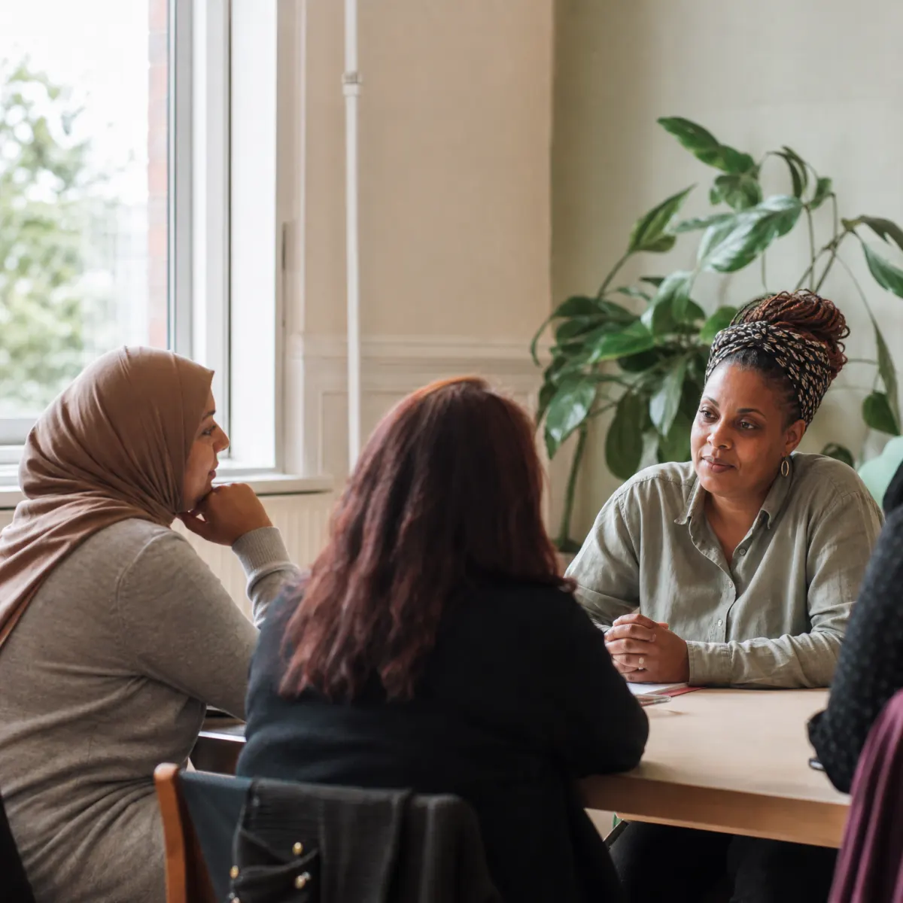
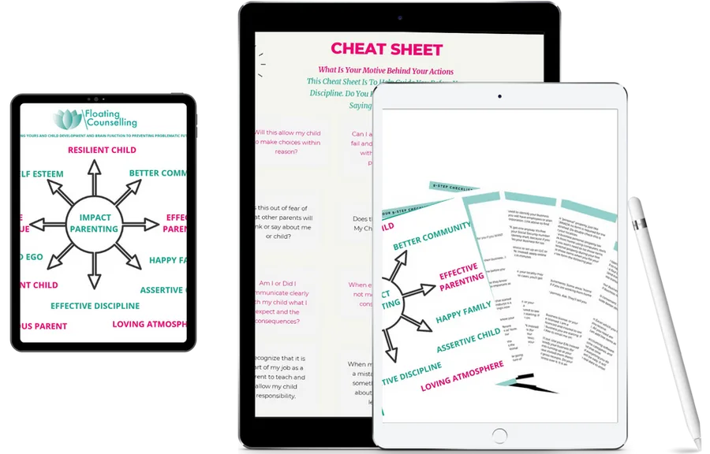
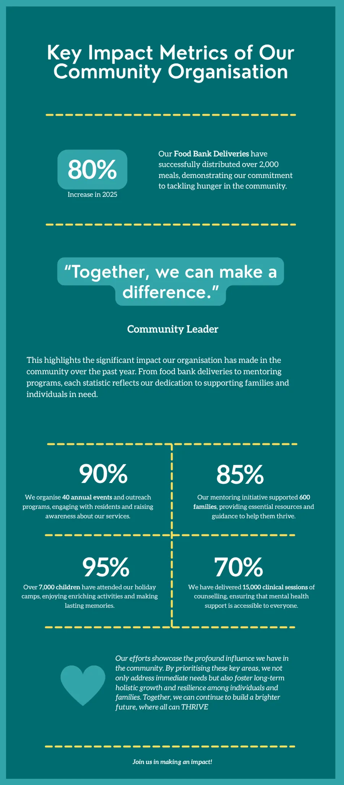
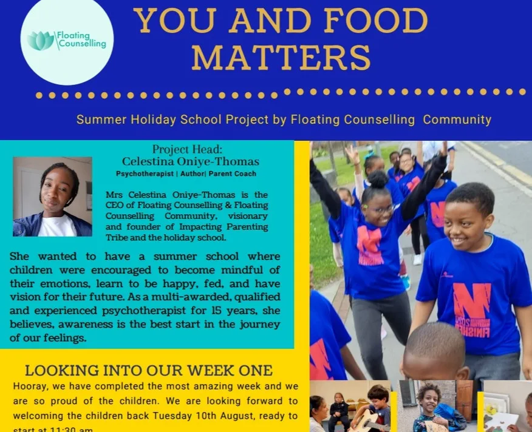
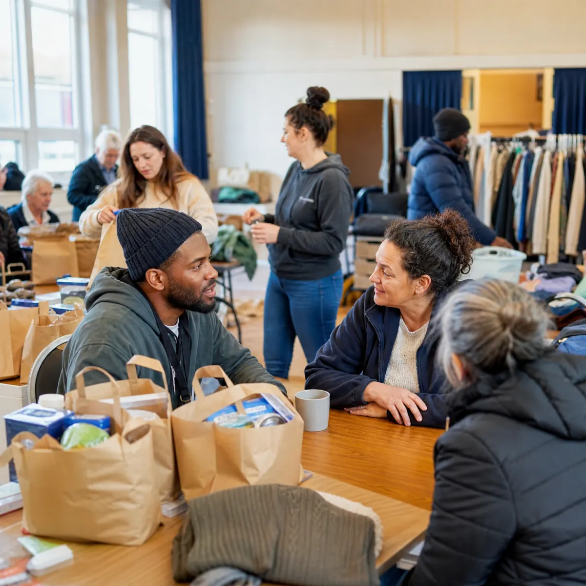

I need counselling
Start with one-to-one, family, couple, group, online or in-person therapeutic support.
View therapy types →Floating Counselling Community is a UK-based grassroots charity empowering individuals, families and marginalised groups through holistic support, therapeutic care, practical help and community-driven programmes designed as wraparound care.

Care that meets you where you are
Croydon · Redbridge · Newham · Durham · Southwark
Tell us what feels most urgent and we will point you towards the right support, whether that starts with therapy, practical help, family work or a partnership conversation.
Start with one-to-one, family, couple, group, online or in-person therapeutic support.
View therapy types →Get practical tools for behaviour, attachment, trauma recovery and family confidence.
View parenting help →Use the hub for food, clothing, forms, housing questions, bills help, digital inclusion and wellbeing support.
Visit the hub →Support local residents through food donations, funding, fundraising, skills, events or professional help.
Volunteer with us →A decade of grassroots care, by the numbers.
Counselling sessions delivered
Clinical hours of care
Combined clinical experience
Children supported through holiday school
Continuous service to community
Practical community support and therapeutic care sit together, so people can stabilise today and grow tomorrow.
Start with the kind of help you need most. We will route you to the right person from there.
Over 23,000 one-to-one, group, couple and family therapy sessions delivered by qualified psychotherapists. In-person across our project boroughs and online, with free and low-cost care for elderly, Universal Credit and low-income clients.
Read about therapy →Workshops, 1:1 mentoring and group programmes for parents, including therapeutic camps, the Impact Parenting Pillar training and a private support group.
Learn more →Practical support, wellbeing services and advocacy through the Floating Community Hub and local projects across Croydon, Redbridge, Newham, Durham and Southwark.
Find out more →Art therapy, music, play therapy and psychological techniques for children aged 5 to 11. Over 10,000 children supported across recent programmes.
Register →Weekly donated food, clothes and practical essentials for individuals and families who need immediate support.
Food Bank details →Budgeting, employment confidence, skills support and enterprise guidance for people rebuilding stability.
Ask about support →Serving Croydon, Redbridge, Newham, Durham & Southwark
Inspired by Maslow's hierarchy of needs, we meet people where they are emotionally, practically and socially to create lasting change and personal growth.
We are proudly led by a diverse team of African women, whose lived experience and professional expertise shape every part of our work.
Our founder, Celestina Oniye-Thomas, knows this work from the inside. After surviving childhood trauma and a spinal injury at sixteen that doctors thought would stop her walking, she taught herself to walk again, retrained as an integrative psychotherapist, and built Floating so families could find the healing she had to fight for.
"Resilience and self-confidence saved my life." Celestina Oniye-Thomas — Founder & CEO
Floating combines 45 years as clinical psychotherapists with 50,000+ clinical hours of working to help individuals, children and parents live better and be better.
The Impact Parenting approach gives families practical, scientifically grounded strategies to heal trauma, parent more effectively, and reduce generational trauma across the family system.
We help parents build connection, resilience and healthier attachment with practical strategies that can be used at home.
You are not ready to heal past traumas, or you do not believe your mental and physical health is worth investing in.


Raising children gets easier with trained professionals supporting physical health, resilience, emotional intelligence and wellbeing through art, music, play therapy, sand play, piano, guitar and proven psychological techniques.
We are not just a holiday school. We teach children values and support them with things they need to grow up uniquely great.
More than 10,000 children have been supported through our holiday school and therapeutic children's programmes.
Register via Holiday Activities Voucher →
Children build confidence, values and resilience through art, music, play and practical wellbeing activities.
A central gathering place for Croydon residents, with wider projects also serving Redbridge, Newham, Durham and Southwark. Come together, have a cup of tea and a chat.
The hub brings practical advocacy, wellbeing support, food, forms, housing questions, digital inclusion and local referrals together in one place, with wider community projects across Croydon, Redbridge, Newham, Durham and Southwark.
Utility bills, home grants and vouchers during the first week.
Wellbeing and housing support in Croydon, Newham and partner hubs.
Internet support, forms, scam awareness, WhatsApp, AI education and free SIM guidance.
Third-week creative healing with Myfamily101 and Floating Counselling Community.
Weekly food, clothing and essentials for individuals and families.
Financial literacy, confidence and employment support for longer-term stability.

Hear from the families and individuals whose lives have been transformed.
I have learned so much from Impact Parenting Pillar training and Celestina. It was incredibly well-rounded and supported a wide variety of issues that parents face. I have teenage children and really needed this. It was full of knowledge to parent more consciously.
My son had terrible twos where he would throw himself on the floor and not follow boundaries. I have now been helped to know his personality better and been given realistic tools to help him be more resilient in a loving way.
As a mother of six, from newborn to eighteen, I learnt so much from Impact Parenting with Celestina. I adapted the strategies to my real life and all my children straight away — and I'm still using them months later. Every parent needs this.
Themes from Celestina Oniye-Thomas's public BetterHelp reviews, reflected alongside Floating Counselling Community's online and in-person care.
Clients describe feeling quickly understood, including around culture, womanhood and identity, with support that helps them find their own next step.
Public BetterHelp feedbackReview themes highlight warmth, patience and a non-judgemental space where people can talk through anxiety, trauma, relationships and life changes.
Public BetterHelp feedbackFeedback points to clear reflections, realistic options and useful techniques that help people simplify complex issues and move forward at their own pace.
Public BetterHelp feedbackLed by a diverse team of African women with lived experience and professional expertise.
A compact view of the funders, sponsors and registrations behind the work.
If your question isn't here, send us a note. We read every message.
Ask us anythingSessions are free or low-cost for eligible individuals. We work on a sliding scale based on circumstances. Our priority is access, and we'll find a way that works for you.
Your first session is a relaxed conversation about what's brought you in, what you'd like to work on, and how we can support you. Nothing is rushed. You set the pace.
Yes. Everything you share is held in strict confidence in line with BACP ethical guidelines. The only exceptions are safeguarding situations, which we'd always discuss with you first wherever possible.
Yes. We offer online sessions and in-person support across the boroughs where we deliver services.
Our therapists are clinically trained psychotherapists working in line with BACP standards. The leadership team has 45+ years of combined clinical experience and over 50,000 clinical hours.
Absolutely. We'll always need consent from the person themselves before opening a case. The best first step is to encourage them to email or WhatsApp us directly.
You can donate via Localgiving or PayPal, volunteer your time, follow us on social media, or fundraise on our behalf. Visit the fundraiser section or get in touch and we'll match you to something that suits.
Fundraising helps keep counselling, food support, holiday school places and community hub sessions accessible for people who need practical and therapeutic care.
Use birthdays, challenges or community events to raise funds for counselling and wraparound support.
Collect food, essentials, vouchers or donations with your team, school, faith group or local business.
Support a hub session, holiday school activity, counselling session or local wellbeing event.
Offer professional skills, event support, transport, mentoring or practical help for local residents.
Share your time, skills or professional experience to support counselling, community hub sessions, holiday school activities, fundraising and practical outreach.
Help residents with food, clothing, forms, signposting, events and welcoming hub sessions.
Offer mentoring, admin, creative workshops, fundraising, transport, digital support or professional expertise.
Complete the volunteer application so the team can match your time, skills and availability to the right project.
Open volunteer form →Email, WhatsApp, call or fill in the form. We aim to reply within two working days.
Addresses are kept together here so the main page stays easier to scan.
London SE25 4DX
Open map →CR0 6RX. Tuesdays, 12:30 to 2:30pm.
Open map →Ilford IG1 4PE
Open map →61 Cranbrook Road, Ilford IG1 4PG. Tuesdays, 11:30am to 1:30pm except holidays.
Open map →Durham DL14 8UH
Open map →Heaton Road Church, Peckham SE15 3NL. Launching June 2026.
Open map →Housing and wellbeing support relaunching July 2026.
Whether you need counselling, community support, food, or just someone to talk to. Reach out today. Your first step matters.
A plain-English summary of how we handle your information, keep people safe, and use cookies. For the full policies or any request, email info@floatingcounselling.co.uk.
Who we are. Floating Counselling Community is a UK grassroots organisation providing counselling and community support since 2015. We operate as FLOATING COUNSELLING COMMUNITY, a company limited by guarantee registered in England and Wales, company number 11334515. We are the data controller for information you share with us. For privacy requests, email info@floatingcounselling.co.uk or write to our Croydon office at 26 Avenue Road, London SE25 4DX.
What we collect. When you contact us through the enquiry form, by email or WhatsApp, we receive the details you choose to give us — typically your name, email address, the topic you select and your message. If you sign up to our newsletter we collect your email address. We do not ask for special-category health information through this website; please share only what you're comfortable with.
How we use it, and our lawful basis. We use your details to reply to you, provide the support you ask for, and run our services (UK GDPR "consent" and "legitimate interests"). Where we have a duty to protect someone, we may process information to meet a legal obligation (see Safeguarding).
Who we share it with. We don't sell your data. We rely on a small number of trusted service providers who help us run the website, email, forms, volunteer applications, donations and maps. Each provider only receives the information needed for that service, and each has its own privacy notice.
Translation. If you translate this page, the on-screen page text may be sent securely to a translation service so the translated version can be returned. Translation is optional, contact-form messages are not translated by this feature, and translated text may be cached in your browser so it loads faster next time.
How long we keep it. We keep enquiry and support-request details only for as long as needed to respond, provide support, meet safeguarding duties, and comply with legal or accounting obligations. Donation and volunteer records are kept according to the relevant provider and legal retention requirements.
Your rights. Under UK GDPR you can ask to access, correct, delete or restrict your data, object to processing, request portability, or withdraw consent at any time. Email info@floatingcounselling.co.uk or write to us at 26 Avenue Road, London SE25 4DX. If you're unhappy with our response you can complain to the ICO at ico.org.uk.
Our commitment. The safety and wellbeing of the children, young people and adults at risk we work with comes first. Our practice is trauma-informed and aligned with BACP ethical standards.
Confidentiality and its limits. What you share is held in strict confidence. The exception is a safeguarding situation — where there is a risk of serious harm to you or someone else, or where we have a legal duty to act. Wherever it is safe to do so, we will talk this through with you first.
Raising a concern. If you're worried about someone's safety, contact us at info@floatingcounselling.co.uk or +44 (0)7305 882959. If someone is in immediate danger, always call 999. You can also contact the NSPCC on 0808 800 5000, or your local authority's safeguarding team.
Our people. Staff and volunteers are recruited safely and receive DBS checks where appropriate to their role.
Safeguarding lead. Linda Yeboah, Director & Safeguarding Officer. Email floatingcounsellinglinda@gmail.com or info@floatingcounselling.co.uk. If someone is in immediate danger, call 999.